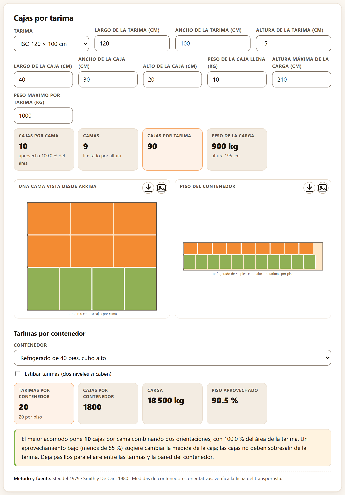
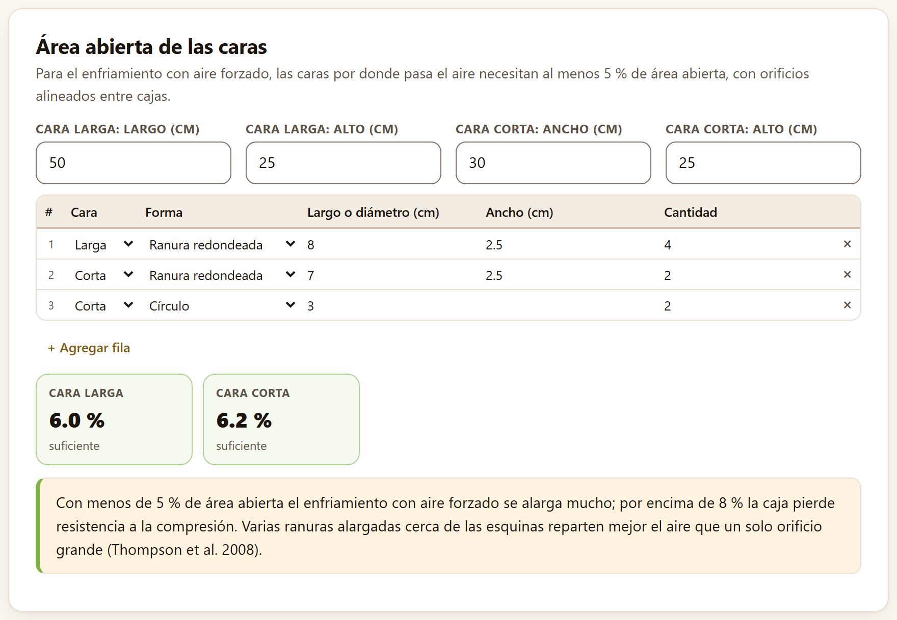
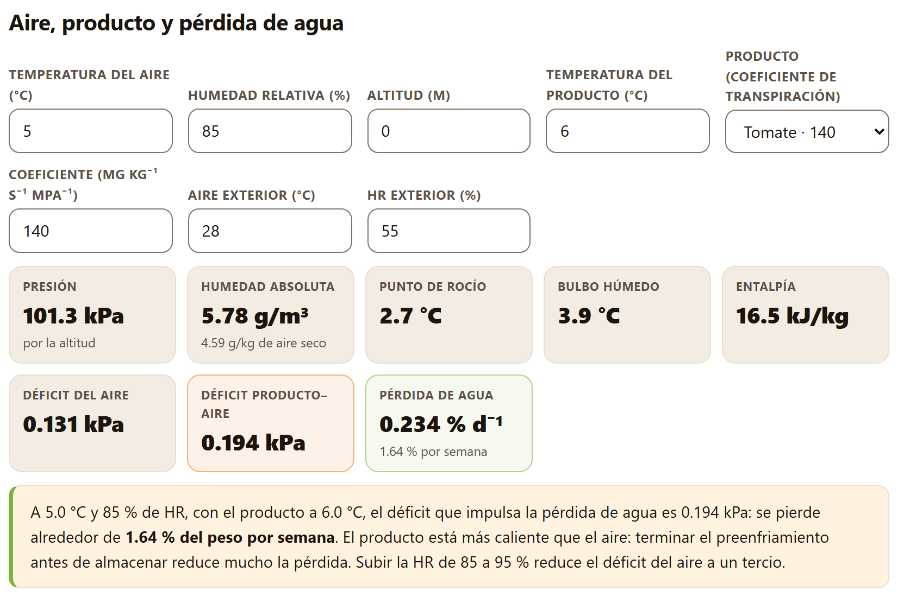
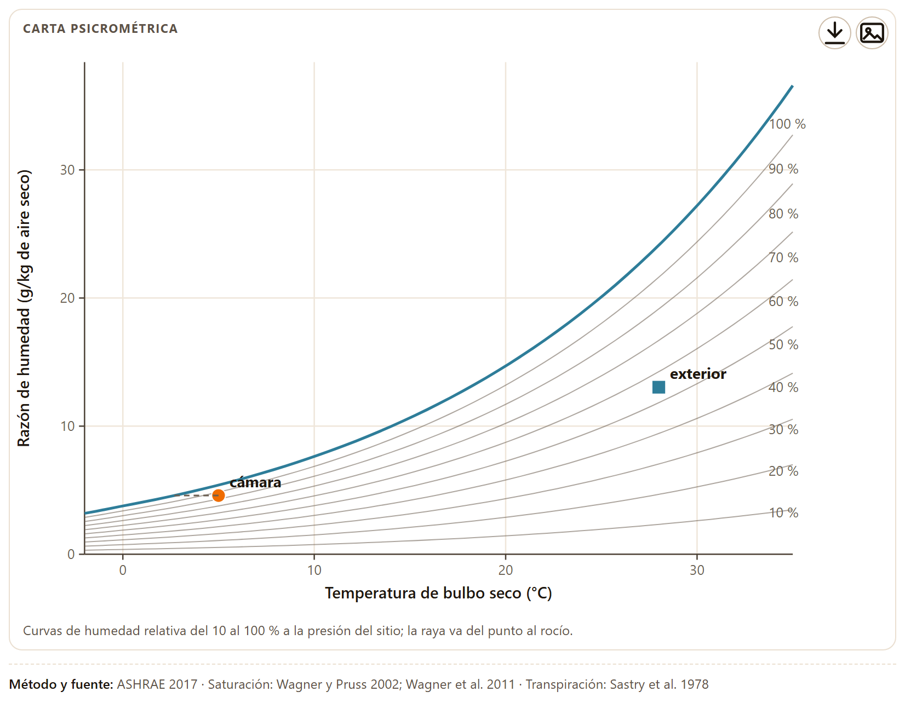
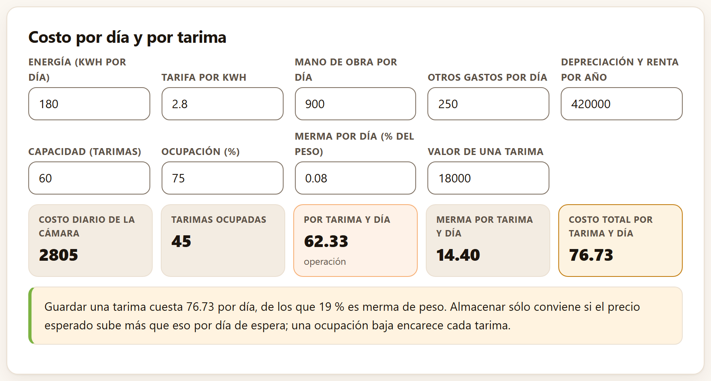
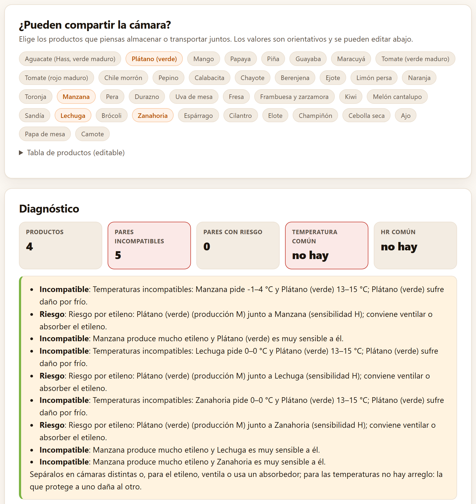
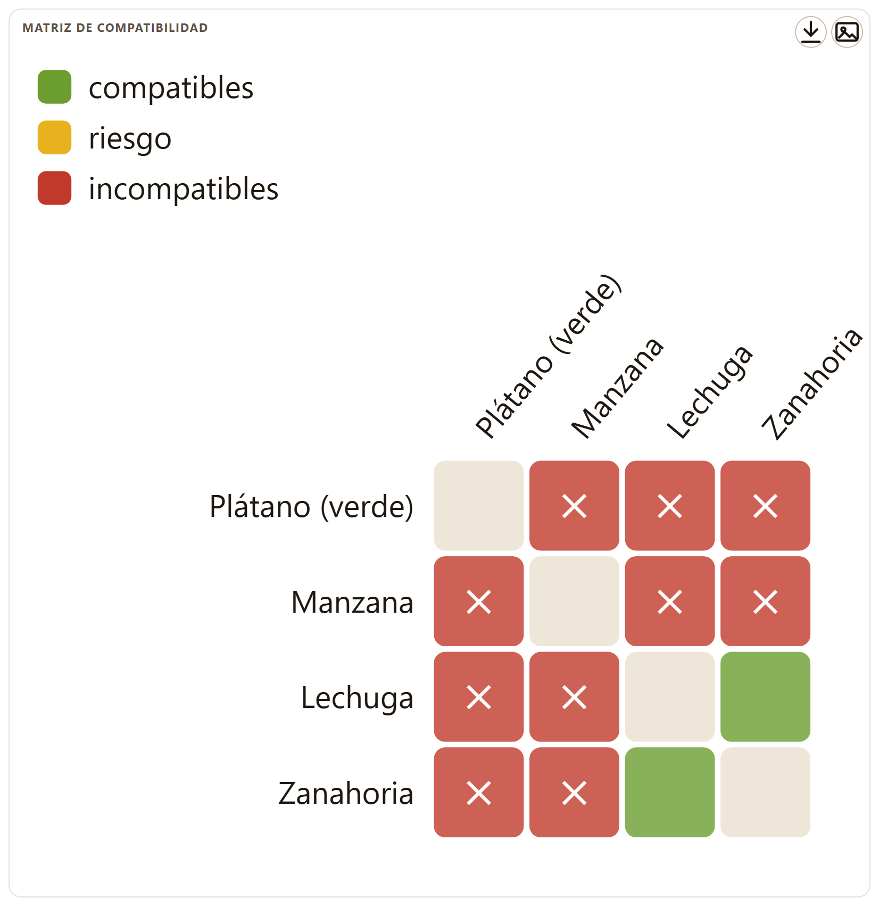

Las cuentas de todos los días en una empacadora y en un almacén frigorífico: cuántas cajas caben en una tarima y cuántas tarimas en un contenedor, si una caja deja pasar el aire del preenfriamiento, cuánta agua pierde el producto en la cámara, cuánto cuesta guardarlo un día más, qué productos pueden compartir la cámara y cómo pasar de una unidad a otra.
El Bloque 8 lleva por subtítulo «Carga, ventilación, ambiente de la cámara, costos, compatibilidad y unidades». Tiene seis pestañas: Tarima y contenedor, Ventilación de cajas, Ambiente del almacén, Costo de almacenamiento, Compatibilidad y Unidades. Ninguna lee una tabla de datos: todas abren con valores de ejemplo escritos en sus campos y se recalculan en cuanto cambias uno, así que no hay ejemplo que cargar. Las cifras de este capítulo son las de esos valores de partida.
Una caja que no llena bien la tarima desperdicia espacio en cada cama, en cada tarima y en cada contenedor; una caja que sobresale se aplasta. La pestaña busca el mejor acomodo de las cajas en la tarima y de las tarimas en el contenedor.
La tarjeta Cajas por tarima tiene dos grupos de campos. La tarima: Tarima (ISO 120 × 100 cm, Europeo 120 × 80 cm, Norteamericano 121.9 × 101.6 cm (48 × 40 in) u Otra medida), que llena Largo de la tarima (cm), Ancho de la tarima (cm) y Altura de la tarima (cm); si cambias una medida a mano, el selector pasa a Otra medida. La caja y los límites: Largo de la caja (cm) 40, Ancho de la caja (cm) 30, Alto de la caja (cm) 20, Peso de la caja llena (kg) 10, Altura máxima de la carga (cm) 210 (con la tarima) y Peso máximo por tarima (kg) 1000.
Acomodar rectángulos iguales en un rectángulo es un problema de corte clásico. La app prueba las dos orientaciones de la caja en toda la cama y, además, todos los patrones de dos bloques: parte la tarima una vez a lo largo o a lo ancho, en un múltiplo del lado de la caja, y acomoda cada parte con una orientación distinta. Se queda con el patrón que más cajas pone (heurísticas de corte en guillotina de Steudel 1979 y de Smith y De Cani 1980). Las camas son las que caben bajo la altura máxima, o menos si el peso máximo se alcanza antes.

Los mosaicos de la tarima son Cajas por cama (con el área que aprovecha), Camas (con lo que las limita: «limitado por altura» o «limitado por peso»), Cajas por tarima y Peso de la carga, con la altura total. La figura Una cama vista desde arriba dibuja el acomodo, con un color por bloque. En el ejemplo, nueve camas de 20 cm sobre una tarima de 15 cm suman 195 cm, debajo de los 210; una décima pasaría del límite. Con la tarima europea de 120 × 80 cm caben 8 cajas por cama y 72 por tarima.
Debajo, Contenedor elige entre Refrigerado de 20 pies, Refrigerado de 40 pies, cubo alto y Caja refrigerada de 53 pies, con sus medidas interiores y su carga útil orientativas, y la casilla Estibar tarimas (dos niveles si caben) pone una tarima sobre otra si la altura del contenedor lo permite. La app acomoda las tarimas en el piso con el mismo método de las cajas y limita su número por la carga útil, contando 25 kg por tarima vacía. Los mosaicos son Tarimas por contenedor, Cajas por contenedor, Carga y Piso aprovechado, y la figura Piso del contenedor dibuja el acomodo.
| Contenedor | Tarimas | Cajas | Carga (kg) | Piso aprovechado | Límite |
|---|---|---|---|---|---|
| Refrigerado de 20 pies | 9 | 810 | 8325 | 86.7 % | el piso |
| Refrigerado de 40 pies, cubo alto | 20 | 1800 | 18 500 | 90.5 % | el piso |
| Caja refrigerada de 53 pies | 21 | 1890 | 19 425 | 90.9 % | el peso |
Con tarimas de 195 cm, marcar Estibar tarimas no cambia nada: dos no caben en los 255 cm del contenedor de 40 pies. La lectura recuerda que un aprovechamiento menor de 85 % sugiere cambiar la medida de la caja, que las cajas no deben sobresalir de la tarima y que hay que dejar pasillos para el aire. Las medidas de los contenedores varían con el fabricante: «verifica la ficha del transportista».
En el enfriamiento con aire forzado, el aire tiene que atravesar las cajas. Si las caras por donde entra y sale tienen poca área abierta, el enfriamiento se alarga; si tienen demasiada, la caja pierde resistencia y se aplasta en la estiba.
La tarjeta Área abierta de las caras pide las medidas de las dos caras —Cara larga: largo (cm) 50, Cara larga: alto (cm) 25, Cara corta: ancho (cm) 30 y Cara corta: alto (cm) 25— y una tabla editable de orificios con Cara (Larga o Corta), Forma (Ranura redondeada, Rectángulo o Círculo), Largo o diámetro (cm), Ancho (cm) y Cantidad. El área de una ranura redondeada de largo a y ancho b es (a − b)·b + πb²/4; la de un círculo, πa²/4. El resultado es el área de los orificios de cada cara entre el área de la cara, en %.

| Menos de 3 % | Insuficiente (mosaico rojo): el aire forzado apenas pasa. |
| De 3 a 5 % | Insuficiente (mosaico ámbar): el enfriamiento se alarga mucho. |
| De 5 a 8 % | Suficiente: el intervalo recomendado. |
| Más de 8 % | La app lo marca suficiente, pero la lectura advierte que la caja pierde resistencia a la compresión. |
Varias ranuras alargadas cerca de las esquinas reparten mejor el aire que un solo orificio grande, y los orificios deben quedar alineados entre cajas y con la tarima (Thompson et al. 2008).
La temperatura y la humedad relativa de la cámara deciden cuánta agua pierde el producto. Lo que la impulsa es el déficit de presión de vapor entre la superficie del producto, saturada a su propia temperatura, y el aire que la rodea.
La tarjeta Aire, producto y pérdida de agua tiene ocho campos, con estos valores de partida: Temperatura del aire (°C) 5, Humedad relativa (%) 85, Altitud (m) 0, Temperatura del producto (°C) 6, Producto (coeficiente de transpiración) Tomate · 140, Coeficiente (mg kg⁻¹ s⁻¹ MPa⁻¹) 140, Aire exterior (°C) 28 y HR exterior (%) 55. El selector de producto trae catorce coeficientes orientativos de Sastry et al. (1978), de la manzana (42) a la lechuga (7400); si escribes otro coeficiente, el selector pasa a Otro (escríbelo).

Los mosaicos dan el estado del aire de la cámara (ASHRAE 2017): la Presión, que sale de la altitud; la Humedad absoluta en g/m³, con la razón de humedad en g por kg de aire seco; el Punto de rocío, el Bulbo húmedo y la Entalpía; el Déficit del aire y el Déficit producto–aire; y la Pérdida de agua por día y por semana. La presión de saturación sale de las ecuaciones de Wagner y Pruss (2002) sobre agua y de Wagner et al. (2011) sobre hielo, las mismas de las tablas de 2017.
A 5 °C y 85 % de HR, el aire tiene 5.78 g de agua por m³ (4.59 g/kg de aire seco), su punto de rocío es 2.7 °C y su déficit, 0.131 kPa. Pero el tomate está a 6 °C, un grado más caliente que el aire, y el déficit que de verdad lo seca es 0.194 kPa. Con un coeficiente de 140 mg kg⁻¹ s⁻¹ MPa⁻¹, pierde 0.234 % de su peso por día, 1.64 % por semana. La lectura añade: «El producto está más caliente que el aire: terminar el preenfriamiento antes de almacenar reduce mucho la pérdida». Con 95 % de HR, el déficit del aire baja a 0.044 kPa —un tercio— y la pérdida, a 0.90 % por semana.
Si el punto de rocío del aire queda por encima de la temperatura del producto, el agua se condensa sobre él: el mosaico del rocío se vuelve ámbar y dice «el producto se condensará». Pasa al sacar producto frío a un andén caliente y húmedo, y el agua libre sobre la fruta favorece las pudriciones.
La carta psicrométrica pone en una sola figura la temperatura y el contenido de agua del aire. Sirve para ver de un vistazo cuánto le falta al aire de la cámara para saturarse y qué le pasa al aire de afuera cuando entra.

La figura Carta psicrométrica se dibuja a la presión del sitio, así que cambia con la altitud, y su eje de temperatura va de −2 °C a 35 °C, y se alarga si la cámara está a menos de 1 °C o el aire exterior a más de 32 °C, para dejar 3 °C de margen. La distancia vertical entre el punto de la cámara y la curva de saturación es el agua que el aire todavía puede tomar. El aire exterior del ejemplo lleva casi tres veces más agua por kilo que el de la cámara: cuando entra por una puerta abierta y se enfría a 5 °C, pasa de su punto de rocío y condensa en los evaporadores, que es parte de la carga de «otras cargas» de la sección 4.7. Las etiquetas de porcentaje del borde derecho quedan un poco por debajo del final de cada curva: guíate por el orden, de la saturación (100 %) hacia abajo.
| Humedad relativa | Déficit del aire (kPa) | Déficit producto–aire (kPa) | Pérdida (% por semana) |
|---|---|---|---|
| 85 % | 0.131 | 0.194 | 1.64 |
| 95 % | 0.044 | 0.106 | 0.90 |
Una pérdida de agua de 3 a 5 % del peso ya se nota como marchitez o arrugas en muchos productos; el mosaico de la pérdida se vuelve ámbar cuando pasa de 3 % por semana. El coeficiente de transpiración varía casi doscientas veces entre productos: la lechuga del selector pierde agua cincuenta veces más rápido que el tomate en la misma cámara.
Guardar producto en frío para venderlo después sólo conviene si el precio sube más de lo que cuesta cada día de espera. La pestaña calcula ese costo diario por tarima, con la merma incluida.
La tarjeta Costo por día y por tarima pide Energía (kWh por día) 180, Tarifa por kWh 2.8, Mano de obra por día 900, Otros gastos por día 250, Depreciación y renta por año 420 000, Capacidad (tarimas) 60, Ocupación (%) 75, Merma por día (% del peso) 0.08 y Valor de una tarima 18 000. Las cantidades de dinero van en la moneda que uses; la app no escribe símbolo.

La energía cuesta 180 × 2.8 = 504 al día; con 900 de mano de obra, 250 de otros gastos y 420 000/365 = 1151 de depreciación y renta, la cámara cuesta 2805 al día. Al 75 % hay 45 tarimas, y cada una carga 62.33 de operación. La merma de 0.08 % diario sobre una tarima de 18 000 son 14.40: el total es 76.73 por tarima y día, de los que «19 % es merma de peso». Guardar una tarima sólo conviene si su precio sube más que eso por cada día de espera.
La ocupación pesa mucho: con la cámara llena (100 %) el costo de operación baja a 46.74 por tarima y el total a 61.14, porque los gastos fijos se reparten entre más tarimas. La merma, en cambio, no depende de la ocupación: depende de la humedad y la temperatura de la cámara (sección 8.3).
En la práctica muchos productos comparten cámara o contenedor. No siempre se puede: uno pide una temperatura que daña al otro por frío, uno produce el etileno que madura o amarillea al otro, o uno desprende olores que el otro absorbe.
La tarjeta ¿Pueden compartir la cámara? muestra un botón por cada uno de los 38 productos de la tabla; un clic lo elige o lo quita (los elegidos van resaltados). De partida están elegidos el plátano verde, la manzana, la lechuga y la zanahoria. El desplegable Tabla de productos (editable) guarda, para cada producto, la temperatura y la HR recomendadas (T mín (°C), T máx (°C), HR mín, HR máx), la clase de producción de etileno a 20 °C (Etileno: VL < 0.1, L 0.1–1, M 1–10, H 10–100 y VH > 100 µL kg⁻¹ h⁻¹), la Sensibilidad al etileno (L, M, H), el daño por Frío (0 no, 1 moderado, 2 sensible) y el Olor («p» desprende, «a» absorbe). Son valores orientativos para los cultivares más comunes (Kader 2002; Gross et al. 2016; McGregor 1989): corrígelos con los de tu cultivar o añade productos con + Agregar fila.

La tarjeta Diagnóstico aparece cuando hay al menos dos productos elegidos. Sus mosaicos son Productos, Pares incompatibles, Pares con riesgo, Temperatura común y HR común (el intervalo que comparten todos, o «no hay»). La lectura enumera cada problema, par por par. El mosaico de los pares con riesgo cuenta sólo los pares que tienen riesgos y ningún problema incompatible: en el ejemplo dice 0, aunque la lista nombra tres «Riesgo por etileno», porque los tres van en pares que ya son incompatibles.
| Incompatible por temperatura | Los intervalos de temperatura no se traslapan; la lectura dice además si el producto de clima cálido sufre daño por frío. |
| Incompatible por etileno | Un productor alto o muy alto (H, VH) junto a un producto muy sensible (H). |
| Riesgo por etileno | Un productor H o VH junto a uno de sensibilidad media, o un productor medio (M) junto a uno muy sensible: conviene ventilar o absorber el etileno. |
| Riesgo por humedad | Las humedades recomendadas quedan separadas por más de 5 puntos. |
| Riesgo por olor | Uno desprende olores («p») que el otro puede absorber. |
Para el etileno hay remedio —ventilar, un absorbedor—; para las temperaturas no: la que protege a uno daña al otro.
El plátano verde pide 13–15 °C y sufre daño por frío; la manzana, de −1 a 4 °C, y la lechuga y la zanahoria, 0 °C: tres pares incompatibles por temperatura. La manzana produce mucho etileno y el plátano, la lechuga y la zanahoria son muy sensibles a él: tres pares incompatibles por etileno (el de manzana y plátano ya lo era por temperatura). En total, 5 pares incompatibles; el único par sin problemas es lechuga con zanahoria. La lista escribe los intervalos como «Manzana pide -1–4 °C» y «Lechuga pide 0–0 °C»: léelos como −1 a 4 °C y 0 °C.

Las fichas técnicas, los artículos y los equipos usan unidades distintas: grados Fahrenheit, libras-fuerza, milésimas de pulgada, partes por millón. La última pestaña las convierte.
La tarjeta Conversión de unidades tiene tres controles: Magnitud, Valor (40) y De, la unidad del valor. Los resultados aparecen en mosaicos, uno por cada otra unidad de la magnitud, con seis cifras significativas.
| Magnitud | Unidades | 40 en la primera unidad equivale a |
|---|---|---|
| Temperatura | °C, °F, K | 104.000 °F · 313.150 K |
| Presión | kPa, atm, bar, psi, mmHg, Pa | 0.394769 atm · 0.400000 bar · 5.80151 psi · 300.025 mmHg |
| Masa | kg, g, lb, t, oz | 88.1849 lb · 1410.96 oz |
| Fuerza (firmeza) | N, kgf, lbf, gf | 4.07886 kgf · 8.99236 lbf |
| Longitud (espesor) | mm, cm, m, in, ft, mil, µm | 1.57480 in · 1574.80 mil |
| Concentración de gas | %, ppm (µL/L), ppb, µL/L | 400 000 ppm · 400 000 000 ppb |
Dos conversiones salen a menudo en poscosecha: la firmeza que un penetrómetro da en kgf o lbf (1 kgf = 9.807 N; 1 lbf = 4.448 N) y el espesor de las películas, que muchos proveedores dan en mil, milésimas de pulgada (1 mil = 25.4 µm: una película de 40 µm es de 1.57 mil). En la concentración, ppm y µL/L son lo mismo, y la lista los trae dos veces.
| Lo que ves | Lo que significa |
|---|---|
| Área de la tarima aprovechada < 85 % | La caja no le va a la tarima: prueba otra medida de caja |
| «limitado por peso» | Caben más camas o tarimas por altura o por piso, pero no por peso: la carga útil manda |
| Ventilación < 5 % en una cara | El aire forzado no pasará bien: más ranuras o más grandes |
| Déficit producto–aire mayor que el del aire | El producto está más caliente que la cámara: termina el preenfriamiento antes de almacenar |
| Pérdida de agua > 3 % por semana | Sube la HR, baja la temperatura, usa empaques que frenen la transpiración o acorta el almacenamiento |
| Costo por tarima y día mayor que la subida esperada del precio | No conviene guardar: vende antes |
| Temperatura común «no hay» | Hacen falta cámaras distintas |